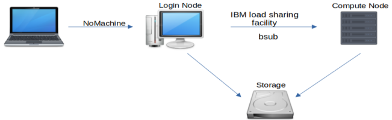

🐚 Use the Command-line
The HBS Grid uses IBM Spectrum LSF to run applications on powerful remote computers. LSF is a large and complex set of tools; our goal here is to give you just enough information so that you can use it to run jobs on our system, without overwhelming you with details and options.
Graphical tools available
This software environment includes robust graphical tools that reduce the need to use the command line for many interactive tasks. This section is for those who prefer the command line, either for aesthetic reasons or because they need to submit batch jobs or carry out complex operations that cannot be easily performed using graphical menu-driven tools.
LSF provides bsub, a command-line program for running applications on powerful remote
computers. For example, you can use
to start an interactive R job on a compute node. Breaking this example down will make the basics of bsub clear:
bsub(batch submission) is the top-level command used to run applications on powerful remote machines.-q short_intmeans you want to run on the short interactive queue (details below).-Ismeans we are running an Interactive shell.- The rest of the command (
Rin this case) is the command that will be run on the remote machine.
Compute cluster basics
When you first log in to the HBS Grid using NoMachine or ssh you are running on what we call a "login node". The login nodes do not have substantial CPU or RAM available. All computationally intensive processes should be run on what we call "compute nodes". A diagram of the HBS Grid architecture helps make this clear:

As this diagram shows, the primary purpose of the login nodes is to serve as a hub
for launching jobs on powerful compute nodes. You can do that from the command line
using bsub or from the desktop menu using application launchers.
You may sometimes wish to run applications on the login node, and this is
perfectly fine as long as you are not using it for computationally intensive work.
For example, you may wish to run ipython to work out a small code example, or use
locate to find a file you were working on. These low-resource activities can and
should be done on the login node. The important thing to remember is that bsub is
used to run commands on powerful compute nodes.
Important
Please keep in mind that the system reserves the resources you select, e.g., CPUs used by your job become unavailable for other users. Request only 1 CPU unless you know that you are using code or libraries that were written to run in parallel. Specific memory requirements depend on the nature of the job, but as a rough guide we recommend requesting RAM 4-10 times the size of your data. For example, if you have a 6 Gb .csv file you may wish to request 24GB of memory or so.
Resource requirements
The bsub command allows you to specify RAM and CPU requirements for your job via the -M and -n arguments. For example, you can run a python job with 50 GB of RAM
and 4 CPUs with
Knowing just these arguments to bsub will take you a long way. There is
much more to know about bsub,
but these basics will get you started.
Using GPUs
To request GPU resources you must use the gpu queue. You must also explicitly
specify gpu options; using a single dash for the default settings as shown in the
example below is sufficient for many use cases.
For example,
will get an interactive R session with access to a GPU (note the trailing single dash in-gpu -, this uses the default GPU settings).
If you need more control please refer to the LSF documentation for instructions on specifying more advanced GPU resource requirements.
Job queues & limits
Machines on the HBS Grid are grouped in queues and bsub can start jobs in either
batch (background) or interactive modes. Batch jobs make it easier to run
many jobs at once and are more efficient because jobs don't keep running after the
program is executed. Interactive jobs on the other hand tend to be more
convenient, especially for exploratory work or when developing or debugging a
script or program.
Batch queues including short and long are for running commands without interaction. For example
runs my_r_code.R in batch mode, and
runs my_stata_code.do in batch mode.
Batch vs. interactive jobs
The key differences when submitting batch vs interactive jobs are the -q and
-Is arguments. For example we used -q short for batch and -q short_int for
interactive. Interactive jobs must also include the -Is option.
Interactive queues like short_int and long_int are used to run applications that you will interact with. For example,
runs an interactive RStudio application, and
runs an interactive Stata application.
Queues have other characteristics in addition to the batch vs. interactive distinction. These include the maximum run time and maximum number of CPUs that can be reserved per job. These queue-level limits are summarized in the table below.
| Queue | Type | Length | Max Cores/Job |
|---|---|---|---|
| long_int | interactive | 3 days | 4 |
| short_int | interactive | 1 day | 12 |
| sas_int | interactive | no limit | 4 |
| long | batch | 7 days | 12 |
| short | batch | 3 days | 16 |
| gpu | interactive or batch | no limit | 4 |
| sas | batch | no limit | 4 |
| unlimited | interactive or batch | no limit | 4 |
Run batch jobs in parallel
Other LSF front-ends
There are language-specific ways to submit job arrays that may be more
convenient than the bsub job array approach described here. For
example, R users may wish to consider
ClusterMQ or
batchtools and Python
users may find Dask-jobqueue
more convenient.
It is often useful to split a big job up into many small pieces and
run them all simultaneously.This allows you to spread the work out
across multiple machines on the HBS Grid and can dramatically reduce
the time needed for your computation. You can use bsub job arrays to
submit multiple jobs simultaneously. For example, the following
command creates a job array that runs Rscript run.R 100 times:
Important
Job arrays are powerful tools and you must take care to use them properly.
It is easy to accidentally monopolize system resources, e.g., by running
a large array of jobs that reserve more memory (via the -M argument) then they need.
For example, if each of your 100 jobs reserves 20Gb of memory but only uses 10 you will
have wasted 1Tb of memory. Please take care to avoid this by matching your resource
reservation arguments to the actual resources needed by your program.
Often you will want each job in the array to process a different file
or use a different parameter value. For this purpose LSF sets the
LSB_JOBINDEX environment variable to the job array index (1-100 in
the example above). In this case your program (run.R in the example
above) should retrieve this environment variable and use it to
determine the correct inputs or parameter values.
For more details refer to the LSF job array documentation.
Monitor & troubleshoot
A variety of problems can arise when running jobs and applications on the HBSGrid. LSF provides command-line tools to monitor and inspect your jobs to help you figure out if something goes wrong:
bjobslists your running jobsbhist -alists your recent jobsbjobs -l <JOBID>gives details about running job<JOBID>bhist -l <JOBID>gives details about job<JOBID>
For more detailed troubleshooting help refer to the troubleshooting documentation.